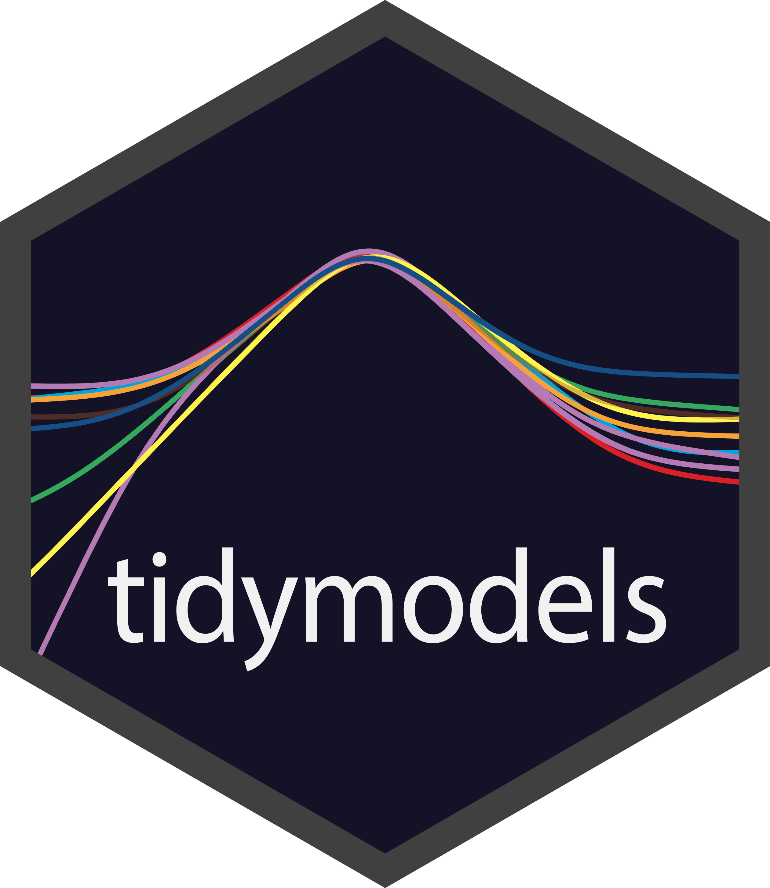
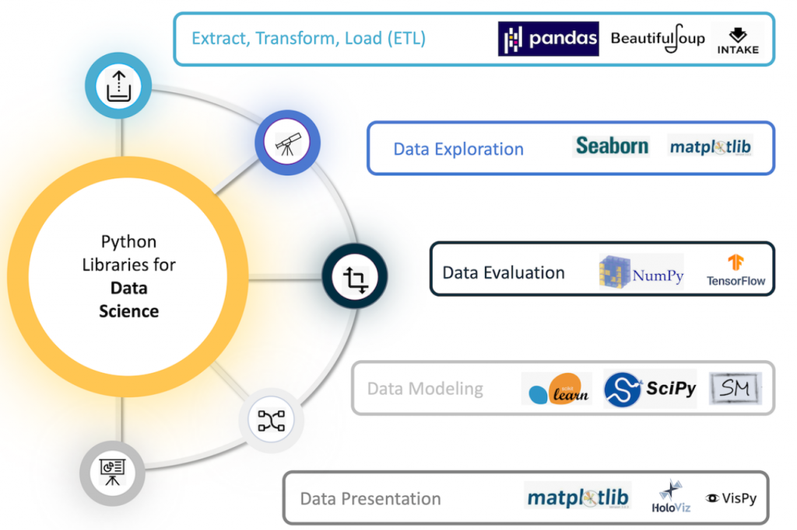

Data Science Overview 📖
MATH/COSC 3570 Introduction to Data Science
Battle of the Data Science Venn Diagrams


Battle of the Data Science Venn Diagrams

Shall We Continue?

{kind=link}
- You probably get the idea. There are so many ways to define data science.
Nobody Knows What Data Science (Scientist) is

- 💰 💰 Dr. Grant (Statistics Education Research Journal, 2017): Data science is the field of people who decide to print “Data Scientist” on their business cards to get a salary bump! 💵 💵

Data Science Workflow


- Import: Take data stored somewhere and load it into your workspace.
- Tidy: Storing data in a consistent rectangular form, i.e., a data matrix.
- Transform: Narrowing in on observations of interest, creating new variables, calculating statistics.


- Visualisation: A good visualisation shows you things that you did not expect or raise new questions about the data.


- Model: Models are complementary tools to visualisation. Once you have made your questions sufficiently precise, you can use a model to answer them.

- Communication: It doesn’t matter how well your models and visualization have led you to understand the data unless you can also communicate your results to others.

- Programming: Surrounding all these tools is programming.
R for Data Science



Python for Data Science
